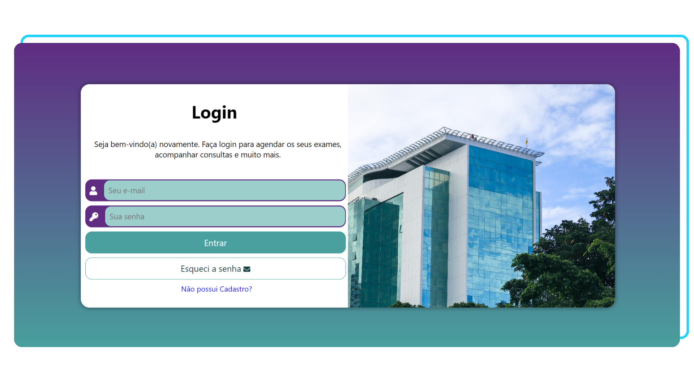

Projeto Login Hospital
Acesse o projeto clicando na imagem
O que é este projeto?
Este projeto consiste em um site responsivo focado 100% no Front-end.
O formulário em questão foi desenvolvido para permitir que pacientes de hospitais e clínicas realizem login ou cadastro, que (tecnicamente) levaria para um site onde eles possam acessar aos seus exames, fazer acompanhamento de consultas, dentre outras ações (Site não é 100% interativo, o foco em questão é o visual da página).
O que foi usado neste projeto?
Neste projeto, foi utilizado HTML e CSS. O foco principal está direcionado para o aprendizado sobre formulários, os quais foram utilizados para coletar e processar os dados inseridos no projeto.
Este projeto foi desenvolvido com base no capítulo 26 do curso "Curso HTML5 e CSS3: módulo 4 de 5" da plataforma Curso em Vídeo.
Voltar para a página anterior